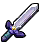

Link never made it back to the castle, being stopped in Hyrule Field as he saw the events from his nightmare play out in front of him: Zelda and Impa riding away from Castle Town on a horse while the mysterious man, Ganondorf, follows them. During this time Link had seen Zelda throw something that landed in the moat of Castle Town and goes down to find it. The moment he touched this object he was in another dream, this time being explained that he just recieved the Ocarina of Time, with Zelda telling him what to do with it and learning the Song of Time. After awakening Link does exactly as what he is shown, going to the Temple of Time in Castle Town and playing Zelda's Lullaby on the Ocarina of Time with the three Spiritual Stones to open the Door of Time, inside he finds the Master Sword and pulls it from its pedestal. Link does not wake up in the Temple of Time as he had left, instead being woken up by Rauru and being shown that Link had aged seven years as he was not of age to carry the Master Sword at the time, locking him inside of the Chamber of Sages for the next seven years. He was told by Rauru that while he did have the Master Sword, it was also a key to the Sacred Realm, which Ganondorf had corrupted with darkness for the past seven years, the state of the Sacred Realm was the same as the real world, which was now full of darkness. After gaining the Light Medallion from Rauru, he was soon brought back to the temple of time where a mysterious figure named Shiek teaches him the Prelude of Light, telling him to find an item in Kakariko Village to help someone in Kokiri Forest.
| PICTURE | NAME | DESCRIPTION |
|---|---|---|
|  | Master Sword | The blade the repels darkness |
|
Hylian Shield | Shield for adult Link |
|
Ocarina of Time | Ocarina given by Zelda |
| Light Medallion | Given by Rauru |